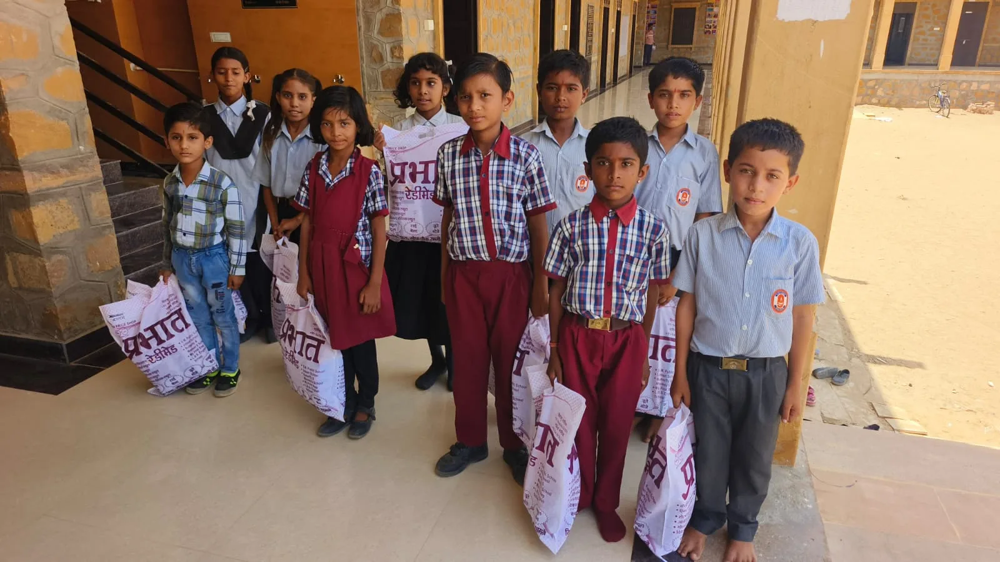
Mai 2024
Mardi 7 mai, distribution des uniformes à 33 enfants de l’école.

Nos actions au Rajasthan
विद्यालय
Au cœur de notre engagement : l’école primaire de Jaisalmer
Jaisalmer
Et aussi : l’école primaire Adarsh Vidhya Mandir de Jaisalmer.
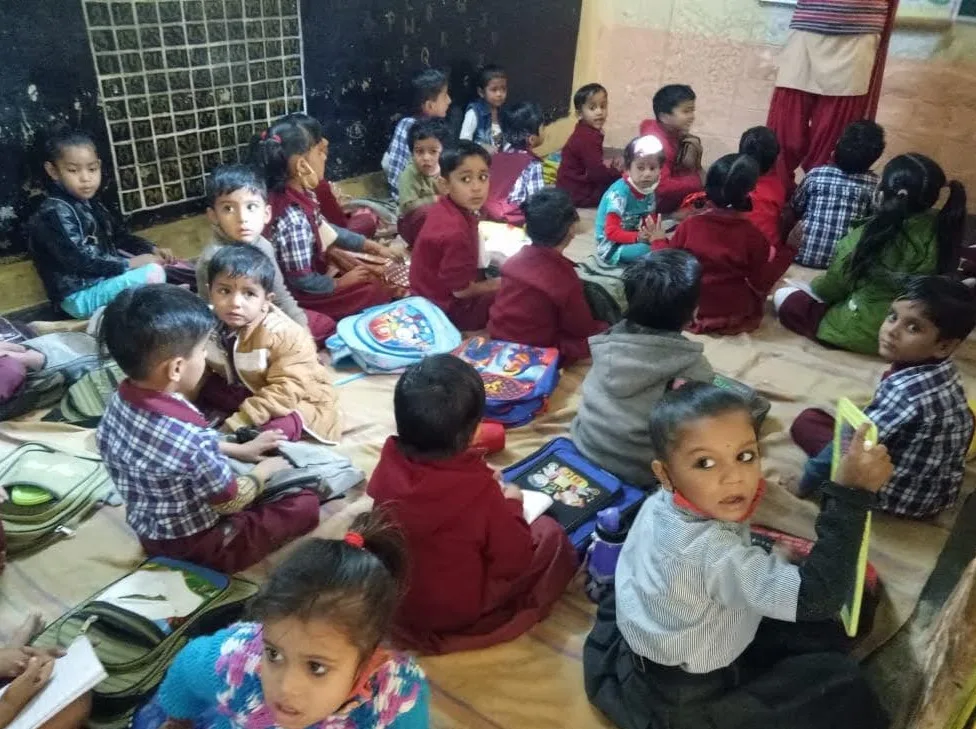
Les élèves de l’école de Jaisalmer.
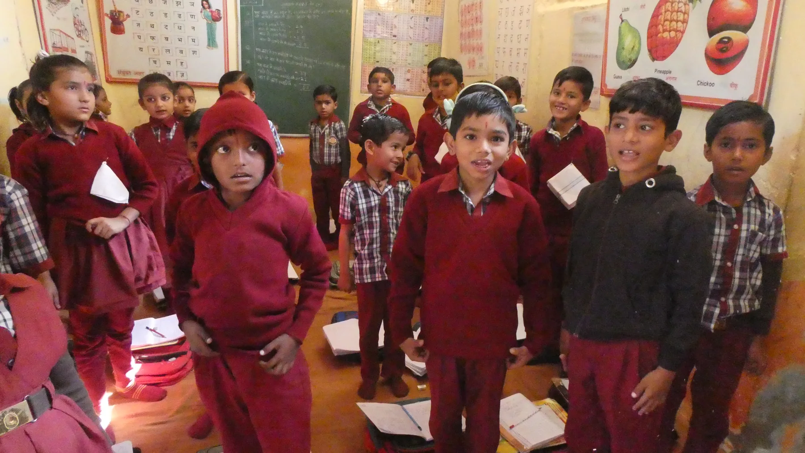
Une classe de l’école, en uniformes.
Nos missions
L’un de nos objectifs est de garantir l’accès à l’école pour les minorités les plus vulnérables de la région de Jaisalmer. Grâce à votre générosité, vous pouvez nous aider à accomplir cette mission de Lutte contre la pauvreté. Contactez-nous pour en savoir plus.
Avec Am’India, vous découvrirez comment, avec pas grand-chose, une équipe peut intervenir et apporter bonheur et réconfort aux familles que nous côtoyons au cours de nos voyages. Nous consacrons une grande partie de nos ressources à cet enjeu.
Notre histoire
Avant la création, et depuis le début de la pandémie, par trois fois, nous avons lancé des cagnottes pour aider nos amis vivant du tourisme et nos relations, en Inde.
Ces cagnottes ont connu un vrai succès. Depuis, nous avons décidé de donner un cadre plus officiel à notre démarche : créer une association qui nous rassemble autour de ces actions pour aider les plus démunis. Chaque contribution nous permettra de réaliser nos projets pour l’école primaire choisie, et pour être à l’écoute des besoins de nos amis indiens.
Sur le terrain

Mardi 7 mai, distribution des uniformes à 33 enfants de l’école.
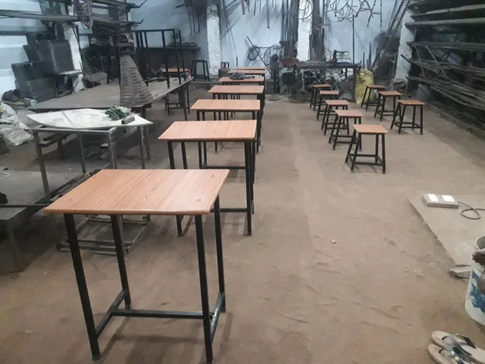
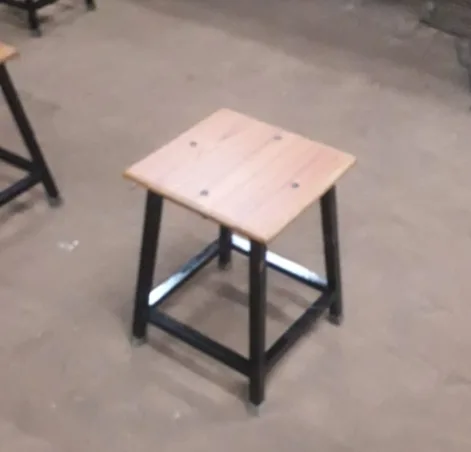
L’école de Jaisalmer : nous avons commandé 50 tables et tabourets pour la classe des plus grands de l’école, ils seront livrés pour la rentrée scolaire début juillet.
Les tables et tabourets offerts par Am’India.
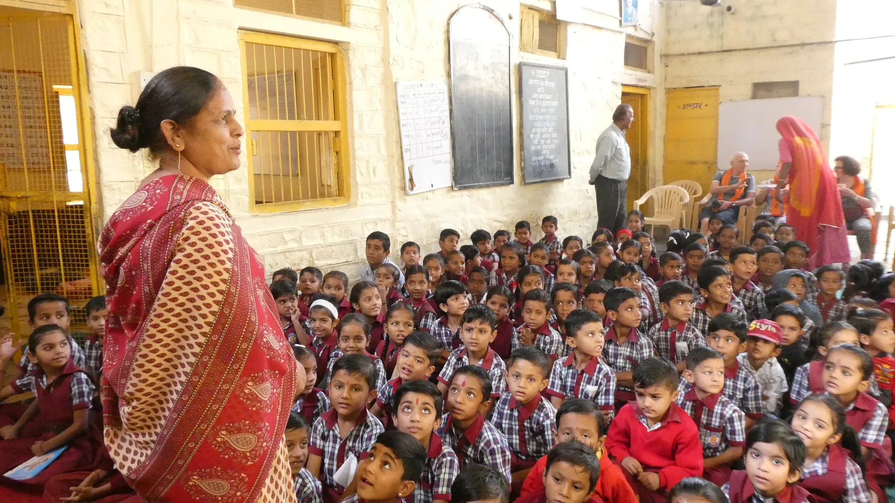
La visite de notre école a été un moment émouvant, nous avons offert aux petits élèves des jeux éducatifs, et des tables aux enseignants. Nous avons aussi distribué les stylos apportés par les voyageurs.
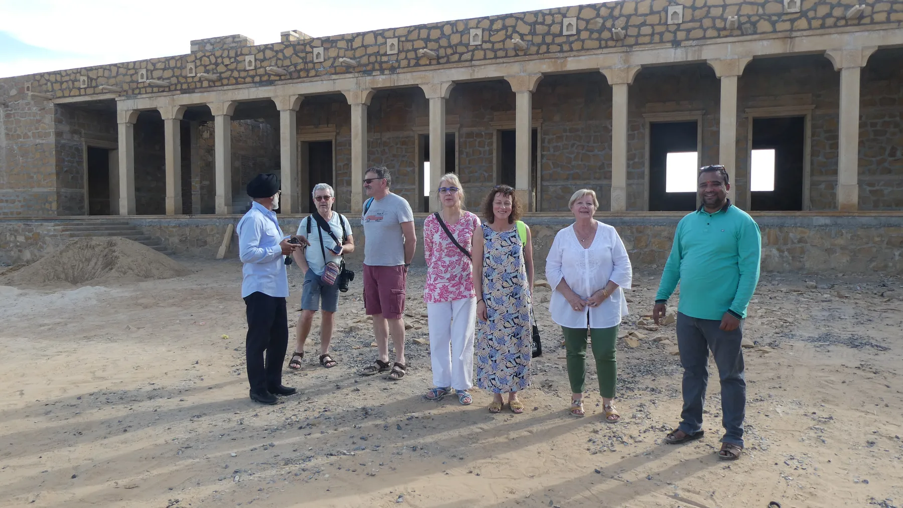
Visite de la future nouvelle école. L’Association a aussi effectué un nouveau versement participant pour moitié au versement de la scolarité des enfants des 27 familles pauvres déjà aidées.
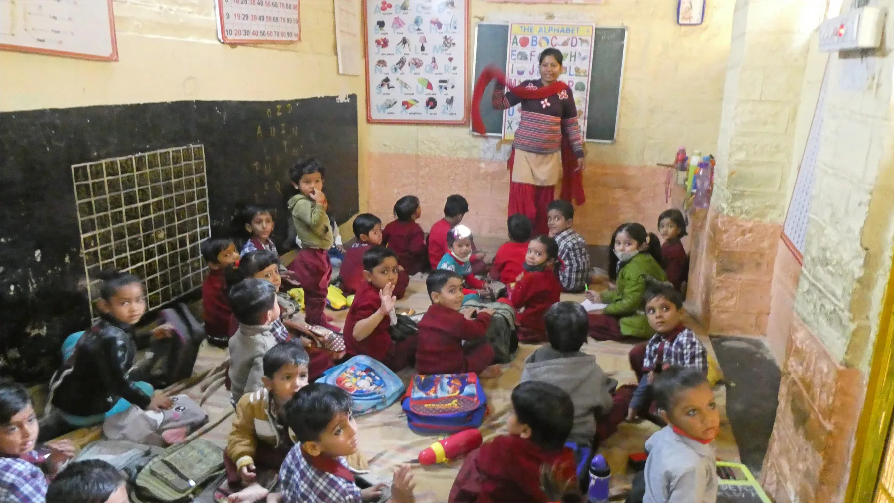
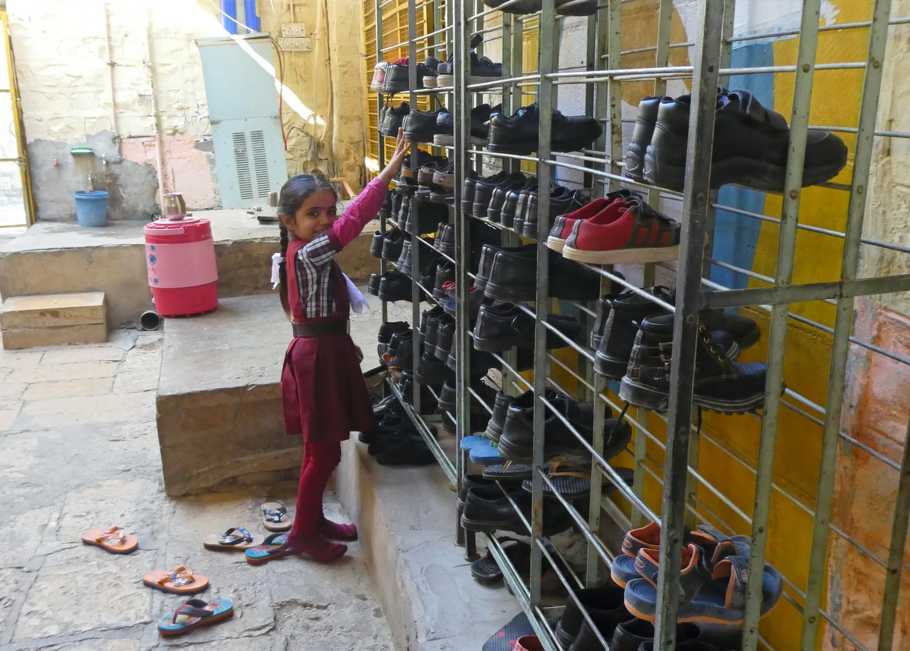
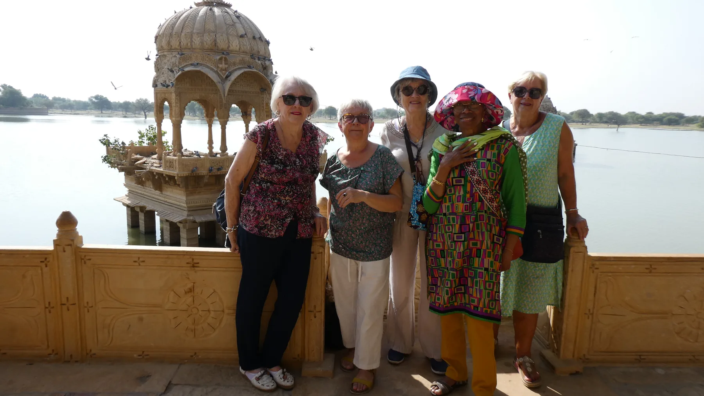
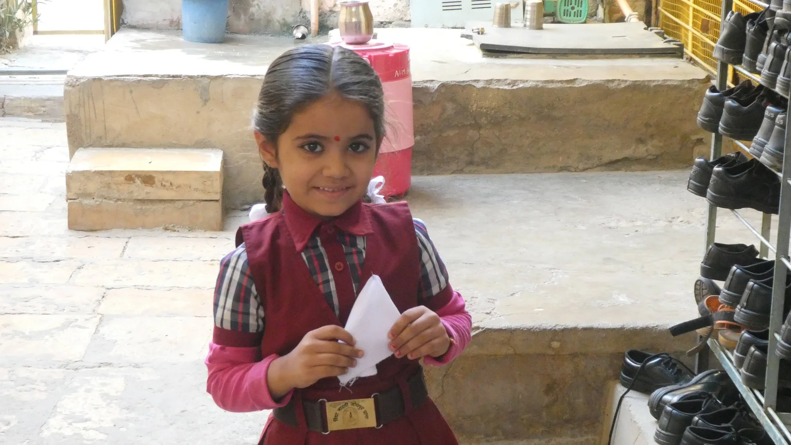
Votre don
AM’INDIA se réjouit déjà de votre engagement. Il y a une multitude de façons de contribuer, et chaque geste est apprécié. En nous prêtant main forte, vous deviendrez un membre actif de notre Organisation humanitaire, et contribuerez à la réalisation de nos projets.